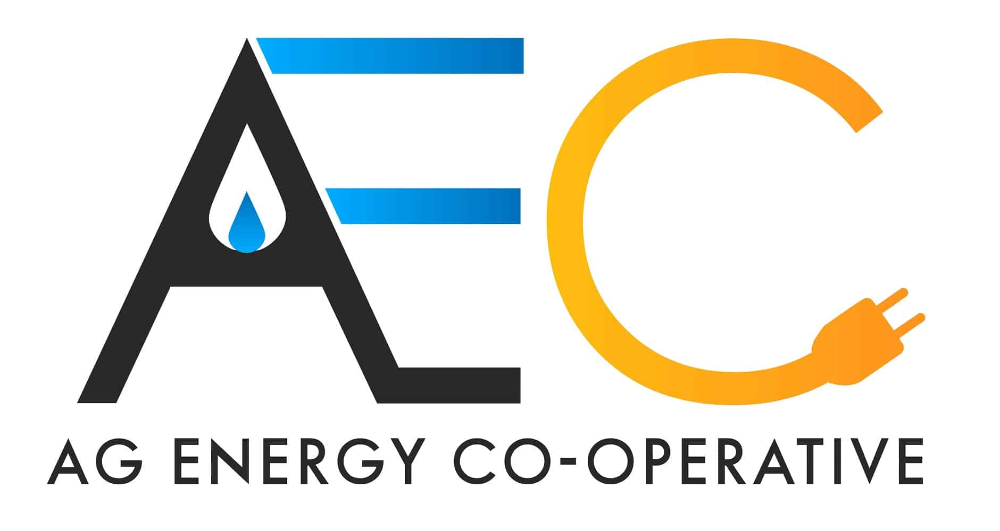

I am a fifth year software engineering student at the University of Guelph. This page will be used to showcase a summary of my co-op experiences at AEC along with a description of the employer and job, and a review of how I progressed my goals set at the start of my work term. I am so thankful to everyone at AEC for giving me this opportunity to learn and grow.

During my co-op work term, I had the opportunity to work for Ag Energy. This cooperative specializes in providing energy strategies and solutions to agricultural producers and processors in Ontario.
My job title was C# Developer and I worked along side 5 other developers. My team worked on developing tools that the entire company would depend on. I specialized in working on projects such as CISv2, used to manage business operations, and CASL, which let users unsubscribe from receiving emails. These applications were written in C# .NET 7.0, Javascript and a mssql database. Our team used Azure devops to co-ordinate and maintain tasks by updating work time estimates, adding comments and email chains. Some of the tools I used daily were: Git, Visual Studio, Microsoft SQL Server Management Studio, .NET core, Hangfire, EF powertools, Bootstrap 5, and SQL search. My day to day tasks included: updating azure sprint boards, bug fixes and new changes for web applications, added and modifying database tables, code review, coordinating testing with QA team.
My goals for this work term were focused on furthering my proficiency with software development tools and mastering C#.
In my first work term, I had the opportunity to work on an ‘epic’ task called CASL, which stands for Canadian Anti-Spam Legislation, with another co-op developer. The job required us to ensure that Ag complied with this legislation, so we had to add an unsubscribe feature to our emails to allow recipients to opt out of receiving emails from Ag. My favourite and most challenging part of this task was that the project was built from the ground up, which we had not done before in asp.net. Starting with just a skeleton project, we followed the database first design pattern and created the tables using mssql. Once the database was designed, we imported the models into the project using entity framework. From there, I created two sites - one for external users to unsubscribe from and another for Ag employees. This second site allowed us to keep track of unsubscribed users, and it would report any errors encountered when unsubscribing a new user. I'm excited to share that the CASL project was completed within a month and has now been implemented into production. It's rewarding to know that real users are now using it and finding value in it, albeit they use it to no longer conduct business with Ag Energy.
Completing the CASL project helped me satisfy my first two goals. Starting a project from scratch was important in mastering C# since I had to learn specific processes such as the database first design approach. This meant I had to create the database tables in SQL and then import them into the C# project as classes. I was also able to learn new technologies while working on the CASL project, such as: EF core powertools, which helped in importing the database and creating DTOs, I also learned how to use Hangfire, which I use to schedule regularly occuring jobs.
My final goal was to work on different project types, in order to get a feel for the kind of work I enjoyed. In total, I worked on 5 different projects: CASL, CISv2, SQL database, Ag Member Portal, and Report Server. I enjoyed working on the SQL database and the Report Server the most, these projects involved optimizing existing SQL queries as well as creating new queries and creating and updating tables. My favourite part was optimizing queries as I was able to learn and apply new techniques while also trying to shave off as much compute-time as possible. In the future I will certainly look to work on more databases and expand my knowledge.
My experience at AEC has been invaluable to me, I have been able to work with and learn from so many great people. I was able to work on an many different and interesting pieces of software that saw the work I did actually get implemented and be used by real people. I was able to apply the knowledge I have gained so far in my degree and previous work terms into a real world setting. Finally, I would like to thank everyone I worked with on my team this term: Seth, John, Himanshu, Mackenzie, Lee, Thomas, Chris, Jenny, Kaite, Gabe, Norm, Marion and Michelle.